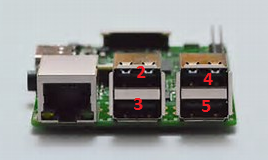

Raspberry Pi
USB ports
The Raspberry PI3 has four external USB ports. Numbered as shown below:

If a USB to serial converter is connected to one of those physical ports, then the respective port is mapped to a Linux serial ports as follows:
2 >> /dev/serial/by-path/platform-3f980000.usb-usb-0:1.2:1.0-port0
3 >> /dev/serial/by-path/platform-3f980000.usb-usb-0:1.3:1.0-port0
4 >> /dev/serial/by-path/platform-3f980000.usb-usb-0:1.4:1.0-port0
5 >> /dev/serial/by-path/platform-3f980000.usb-usb-0:1.5:1.0-port0